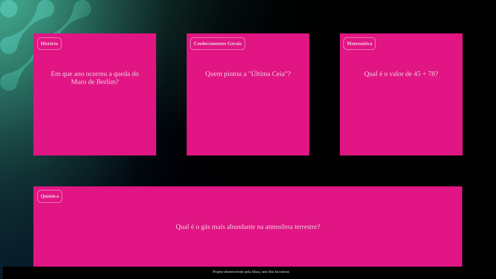

Estudante de Ensino Médio apaixonada por tecnologia
Sou estudante do Ensino Médio e estou explorando o mundo da programação. Adoro aprender sobre desenvolvimento web e criar soluções criativas usando tecnologia.
Minhas habilidades:
HTMLCSSJavaScriptLógicaScratch
Meus projetos

FlashCard
Flashcards são cartões de estudo que facilitam a memorização por meio da repetição ativa e do aprendizado interativo.
Sou apaixonada por tecnologia e sempre estou explorando novas formas de aprender e criar!
Fatos sobre mim
💡 Adoro desafios de programação e resolver problemas.
🎨 Também gosto de design e criar interfaces bonitas.
🚀 Meu sonho é trabalhar com tecnologia e inovação.
📖 Estou sempre aprendendo coisas novas sobre desenvolvimento web.
Minha história
Meu nome é Ana Carolina e desde cedo fui fascinada pela tecnologia. Sempre gostei de desmontar coisas para entender como funcionam e isso me levou a explorar o universo da programação. Ao longo dos meus estudos, descobri que criar soluções tecnológicas não é apenas sobre código, mas também sobre resolução de problemas, criatividade e impacto no mundo.
Sou uma pessoa curiosa e determinada. Quando enfrento desafios, encaro como oportunidades para aprender e crescer. Adoro trabalhar em equipe e acredito que compartilhar conhecimento é uma das formas mais poderosas de evolução. Meu objetivo é construir projetos inovadores que possam ajudar as pessoas e transformar realidades através da tecnologia.
Além da programação, gosto de arte digital, design e tudo que envolve criatividade. A combinação entre tecnologia e estética é algo que me motiva a desenvolver interfaces mais intuitivas e atraentes. No futuro, quero trabalhar com desenvolvimento web, UX/UI Design e projetos que tragam soluções tecnológicas para desafios do mundo moderno.